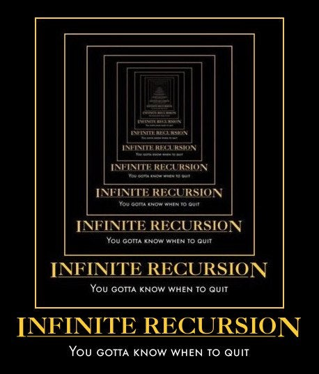

Recursie¶
Om recursie te kunnen begrijpen moet je eerst recursie kunnen begrijpen.
– student, anoniem
Of: het antwoord op het probleem is het antwoord op het probleem (is het antwoord op het probleem)

Zet je schrap want dit onderwerp gaat voor hoofpijn én verassende inzichten zorgen, kies je favoriet…
Een oplossing die zichzelf herhaalt¶
def numis(s):
"""Tel het aantal i's in s
input s: een string
"""
...
Stel je een functie voor die het aantal i’s in een string telt en dit als waarde teruggeeft. Dit is een lastig probleem, laten we proberen het eerst uit te schrijven zonder direct in Python te denken. Het resultaat van de functie zou het volgende moeten zijn:
Totaal aantal i’s in "i❤️aliens"?
Aliens zijn om van te houden, toch?!? Laat dit de string zijn die we willen gaan onderzoeken en je weet dat een string een opeenvolging van karakters is. We zullen karakter voor karakter moeten controleren (testen) of het gelijk is aan het karakter “i” (en ja, emoji zijn ook karakters :heart:). Karakter voor karakter betekent dat een eerste stap om dit probleem op te lossen de volgende zal zijn:
Aantal i’s in "i" + Aantal i’s in "❤️aliens"
We nemen het eerst karakter, tellen het aantal i’s (dit kan voor een enkel karakter 0 of 1 zijn) en tellen daar het aantal i’s in het restant van de string bij op. We herhalen deze handeling voor het eerste karakter van het restant, en tellen daar natuurlijk het resultaat van het eerste karakter bij op:
Aantal i’s in "i" + Aantal i’s in "❤️" + Aantal i’s in "aliens"
Et cetera. Je zal hier een patroon zien, het probleem en oplossing herhaalt zich steeds: na het eerste karakter moeten we hetzelfde “recept” steeds weer herhalen voor het restant van de string.
Terzijde, weet je nog dat je het eerste karakter en het restant van een string kan lezen met s[0] en s[1:]?
Paradigmas¶
Verschillende manieren om dit probleem dit op te lossen:
sequentieeel (iteratief)
zelfgelijkend (recursief)
Het numis(s) probleem valt op meer dan één manier op te lossen en we komen daarmee aan bij het bestaan van verschillende programmeerparadigmas, dat wil zeggen technieken en benaderingen voor het oplossen van een probleem. We gaan eerst recursie verkennen, een iteratieve benadering komt later.
Als je al eerder (meer of minder) hebt geprogrammeerd zal je iteratieve constructies wellicht kennen als lussen (bijvoobeeld “while” of “for each” lussen), deze benadering gaan we nu dus niet gebruiken!
Sequentieel denken¶
faculteit
wiskunde: \(5! = 120\)
informatica: fac(5) = 5 * 4 * 3 * 2 * 1
Laten we het geheugen even opfrissen wat de faculteit van een getal ook alweer is. Stel je 42 aliens voor en je zou willen weten op hoeveel manieren je deze aliens op een rij kan zetten. Je weet misschien het antwoord, dit is 42 x 41 x 41 … 3 x 2 x 1, of ook wel bekend als de 42 faculteit en (wiskundig) geschreven als \(42!\). Sequentieel denken en daarmee dit probleem oplossen (uitschrijven) als 5 * 4 * 3 * 2 * 1 is heel natuurlijk voor mensen, zo hebben we het als oplossing geleerd!
fac(N) = N * (N-1) * ... * 3 * 2 * 1
Maar zou je fac(5) als een meer algemene versie van zichzelf kunnen schrijven? Dat kan, laten we daar een begin mee maken en je zal zien dat een zichzelf herhalend (terugkerend?) patroon gaat ontstaan, net als bij het aantal i’s in "i❤️aliens"…
Recursief denken¶
faculteit
wiskunde: \(5! = 120\)
informatica: fac(5) = 5 * 4 * 3 * 2 * 1
fac(5) = 5 * fac(4)
fac(N) = N * fac(N - 1)
Dit is correct…¶
def fac(N):
return N * fac(N - 1)
maar is niet aan te raden…
Je kan de funcie fac(N) met de meest algemene vorm (oplossing) nu invulllen. De functie roept zichelf aan met steeds N-1, dit is het patroon dat we hebben kunnen ontdekken. Maar dit is niet volledig correct zoals je misschien zelf al kan zien?

Loop in gedachten eens na wat er gebeurt als je 1 hebt bereikt in deze functie, het zal vrolijk fac(N-1) blijven aanroepen! Dit zal dus doorgaan in een “oneindige recursie” want we hebben nog geen rekening gehouden met de “base case”, het geval waar geen recursieve aanroep meer mogelijk is.
Google geeft een goed voorbeeld van oneindige recursie. Hoe vaak ga je op de suggestie (“Bedoelde je: …”) klikken?

Dit zal waarschijnlijk het meest bekende voorbeeld zijn van een oneindige recursie, ook wel bekend als het Droste effect. Terug naar ons voorbeeld, ergens moet de recursie stoppen en hebben we iets van een noodstop (of noodzakelijke stop) nodig, het moment dat een recursieve stap niet meer mogelijk is!

Is het correct?¶
def fac(N):
return N * fac(N - 1)
Een base case ontbreekt, de noodstop!
Er is een duidelijk moment dat we de recursie moeten beëindigen, het moment dat geen recursieve aanroep meer mogelijk is. Dit is het moment dat de base case is bereikt (de “noodzakelijk” stop). N-1 gaat uiteindelijk naar negatieve getallen, zou de waarde 0 in dit geval de noodzakelijke stop (de base case) kunnen zijn?
Recursief denken¶
def fac(N):
if N == 0: # base case
return 1
else: # recursive case
return N * fac(N - 1)
Je kan testen op de base case, in het geval van een faculteit is dit bereikt als N gelijk is aan 0. Maar als je naar de laatste regel kijkt (N * fac(N-1)), hoe kan iets (N) vermenigvudigd worden met iets dat nog niet is uitgevoerd (fac(N-1))?
Recursief handelen¶
def fac(N):
if N == 0: # base case
return 1
else: # recursive case
rest = fac(N - 1)
return N * rest
Deze uitwerking is meer in de buurt van wat achter schermen gebeurt. In het geval N * fac(N - 1) wordt door de computer de recursieve aanroep (fac(N - 1)) eerst aangeroepen om vervolgens daar N mee te vermenigvuldigen. Je kan dit goed vergelijken met het eerst zetten van een variabele (rest in dit geval) die later wordt gebruikt om het antwoord te berekenen (N * rest).
Stapelen¶
Recursief stapelen!
Recursieve aanroepen van functies worden gestapeld, zoals je al eerder hebt gezien! Van onder naar boven worden de frames van de stack gehaald en resultaten naar het bovenliggend frame doorgegeven.

De aanroepen zijn gestapeld in 5 frames (we tellen het globale frame even niet mee). Elk frame wacht nu op het resultaat van het onderliggende frame.

Bij het laatste frame (N = 0) wordt de base case bereikt en het geeft 1 als returnwaarde terug aan het bovenliggende frame.


En zo geeft het volgende frame steeds de returnwaarde terug aan het bovenliggende frame!


Tot de uiteindelijke oplossing is bereikt, fac(5) is gelijk aan 120.
De uitdaging¶

De uitdaging van het oplossen van recursief handelen is om zowel het geheel als de zelfgelijkende delen te zien!
Je komt trouwens veel voorbeelden van recursie in de natuur tegen, later zie je meer voorbeelden!
Recursie¶
Recursie als een paradigma voor het oplossen van problemen
een base case, en
een zelfgelijkend ontwerp
Recursie is een belangrijk patroon, of paradigma voor het oplossen van problemen. Bedenk dat er altijd een base case en een zelfgelijkend ontwerp aanwezig moet zijn. Zelfgelijkend is in dit geval dat we dezelfde oplossing steeds kunnen toepassen op een deel van het probleem.
Recursief ontwerp¶
Faculteit: fac(x)¶
fac(5):
fac(5)is de waarde van5*4*3*2*1en is gelijk aande waarde
5 * (4*3*2*1), wat gelijk is aan5 * fac(4)
De base case:
fac(0)moet 1 teruggeven
Dit is het voorbeeld dat we net in detail hebben bekeken, tot en met hoe het stapelt…
def fac(x):
"""faculteit, recursief!
"""
if x == 0: # base case
return 1
else: # recursive case
return x * fac(x-1)
assert fac(0) == 1 # test de base case
assert fac(5) == 120 # test de oplossing
We herhalen de code nog een keer: met tests (in dit geval assert statements) kan je bepalen of je te maken hebt met de base case, of dat een recursieve aanroep moet worden gedaan. En bedenk nogmaals, zonder een base case zal je in een oneindige recursie terecht komen!
Terzijde, Python zal jou tegen een eindeloze recursie beschermen omdat het standaard een maximale diepte (het aantal frames) heeft geconfigureerd voor de recursieve aanroep van een functie (3000 is de limiet). Een stack overflow fout zal je dus niet snel zien en de limiet kan je aanpassen, als het nodig is!
Optelling: plusone(n)¶
plusone(5):
plusone(5)is de waarde van1+1+1+1+1en is gelijk aande waarde
1 + (...), wat gelijk is aan1 + plusone(...)
De base case:
plusone(0)moet … teruggeven
Een ander voorbeeld. plusone(n) telt n door 1-en op te tellen. Als n gelijk is aan 5 dan worden 5 1-en bij elkaar opgeteld. Hoe kan je dit recursief oplossen? Denk altijd aan eerst aan de base case, in welk geval is is geen recursie meer mogelijk? Wat moet in dit geval voor de ... moeten worden ingevuld voor de base en recursieve case?
def plusone(n):
"""Geeft n terug door 1-en op te tellen!
"""
if n == 0: # base case
return ...
else: # recursive case
return ...
De ... zie je hier in de code terug. Wat moet voor de base- en recursieve case worden ingevuld? Denk hier terug aan aan fac(x), hetzelfde patroon zal je hier moeten volgen!
Oplossing¶
def plusone(n):
"""Geeft n terug door 1-en op te tellen!
"""
if n == 0: # base case
return 0
else: # recursive case
return 1 + plusone(n-1)
assert plusone(0) == 0 # test de base case
assert plusone(5) == 5 # test de oplossing
De recursieve case moet hier voor elke n-1 worden herhaald, zoals je ook bij fac(x) hebt gezien.
Machtverheffing: pow(b, p)¶
pow(2, 5):
pow(2, 5)is de waarde van2*2*2*2*2en is gelijk aan2 * (...), wat gelijk is aan2 * pow(..., ...)
De base case:
pow(2, 0) moet … teruggeven
def pow(b, p):
"""b**p, recursief!
"""
if p == 0: # base case
return ...
else: # recursive case
return ...
Ook hier kan je een base- en recursive case ontdekken. Laten we het uitschrijven:
Oplossing¶
def pow(b, p):
"""b**p, recursief!
"""
if p == 0: # base case
return 1.0
elif p < 0: # tweede base case? of een recursive case?
...
else: # recursive case
return b * pow(b, p-1)
assert pow(2, 0) == 1.0 # test de base case
assert pow(2, 5) == 32.0 # test de oplossing
Er is hier meer uitgeschreven dan je zou verwachten! Want, wat moet je doen in het geval dat de exponent p een negatief getal is? Is dit een base- of recursive case?!?
Een machtsverheffing met grondtal \(b\) en negatieve exponent \(p\)
kan herschreven kan worden als
Misschien moet je hier wat wiskundige kennis afstoffen! We gaan niet verder op de achtergrond in en nemen dit ter kennisgeving aan… Het roept wel een andere vraag op, namelijk hoe we Python een negatief getal kunnen laten omzetten naar de positieve waarde? Of, meer in het algemeen, de omkering van een willekeuringe waarde (met andere woorden, de logische negatie van een waarde)?
p = -5
-p
5
Dit probleem komt zo vaak voor dat het ook in syntax is geïmplementeerd! Probeer in dit geval ook eens als p = 5. We kunnen dit nu gaan toepassen op de recursieve case in het geval exponent p een negatieve waarde heeft.
Oplossing¶
def pow(b, p):
"""b**p, recursief!
"""
if p == 0: # base case
return 1.0
elif p < 0: # recursive case (p negatief)
return 1.0 / pow(b, -p)
else: # resursive case (p positief)
return b * pow(b, p-1)
assert pow(2, 0) == 1.0 # test de base case
assert pow(2, 5) == 32.0 # test de oplossing
assert pow(2, -5) == 0.03125 # test de oplossing
Voordelen van recursie¶
Het kan zelfstandig in één keer een willekeurige diepte ingaan
De functie heeft aan zichzelf genoeg en met één aanroep (van ons) lost het zichzelf tot elke willekeurige diepte op!

Romanesco is een groente met prachtige recursieve patronen.

Maar is recursie ook bij ons te vinden?

Misschien, maar gelukkig heeft ons lichaam wél de base case goed gedefinieerd!
Python is in¶
Bevind een element zich in een sequentie (een list, een string, …)?
Dit probleem zal je vaak gaan tegenkomen: bijvoorbeeld bij de vraag of “i” een klinker is? Klinkers zijn de karakters a, e, i, o en u. Dit kan je als een sequentie schrijven, bijvoorbeeld als string "aeiou" of als list ["a", "e", "i", "o", "u"]. Python kent de in operator om te testen of een element zich in een sequentie bevindt, bijvoorbeeld "i" in "aeiou". Een paar voorbeelden:
is in list¶
42 in [41, 42, 42]
True
42 in [[42], "42"]
False
Kan je uitleggen waarom de laatste False teruggeeft?
Meer voorbeelden¶
Aantal klinkers: vwl(s)¶
vwl("zaaiuien")
vwl("zaaiuien")is het aantal klinkers in “zaaiuien” en is gelijk aanhet aantal klinkers in “z” + het aantal klinkers in
vwl(...)
De base case:
vwl("") moet … teruggeven
def vwl(s):
"""Tel het aantal klinkers in s
"""
if s == "":
...
elif ...:
return ...
else:
return ...
Oplossing¶
def vwl(s):
"""Tel het aantal klinkers in s
"""
if s == "":
return 0
elif s[0] in "aeiou":
return 1 + vwl(s[1:])
else:
return vwl(s[1:])
vwl("zaaiuien")
6
Alleen klinkers: keepvwl(s)¶
keepvwl("pluto")
keepvwl("pluto")is “pluto” zonder medeklinkers en is gelijk aande klinkers in “p” + de klinkers in
keepvwl(...)
De base case:
keepvwl("") moet … teruggeven
def keepvwl(s):
"""Geef ALLEEN de klinkers in s terug
"""
if s == "":
return ...
elif ...:
return ...
else:
return ...
Oplossing¶
def keepvwl(s):
"""Geef ALLEEN de klinkers in s terug
"""
if s == "":
return ""
elif s[0] in "aeiou":
return s[0] + keepvwl(s[1:])
else:
return keepvwl(s[1:])
keepvwl("pluto")
'uo'
Het hoogste getal: max(L)¶
max([7, 5, 9, 2])
max([7, 5, 9, 2])geeft het hoogste getal terug en is7 of het hoogste getal in
max(...)
De base case:
als len(L) == 1 dan moet max(L) … teruggeven
def max(L):
"""Geef de grootste waarde van L terug
"""
if len(L) == 1:
return ...
M = ... # De max van het RESTANT van L
if ...:
return ...
else:
return ...
Oplossing¶
def max(L):
"""Geef de grootste waarde van L terug
"""
if len(L) == 1:
return L[0]
M = max(L[1:]) # De max van de REST van L
print("M is", M, "en L[0] is", L[0]) # test, print M en L[0]
if L[0] > M:
return L[0]
else:
return M
max([7, 5, 9, 2])
M is 2 en L[0] is 9
M is 9 en L[0] is 5
M is 9 en L[0] is 7
9
Je ziet dat we een print statement hebben toegevoegd nét na het moment dat de waarde van M bekend is. Het eerste print statement zegt ons dat M gelijk is aan 2, dit is het laatste element in de lijst L. Waarom het laatste element als eerste geprint?
Als we steeds de functie max met het restant van L aanroepen dan zal het laatste restant 1 element bevatten (de waarde 2) en dit is de base case! L[0] is in dit geval 9 en dit is het één na laatste element. De lijst wordt van achteren naar voren doorlopen en je ziet hier de stack in actie!
Spring eerst, kijk later¶
max(L) is een goed voorbeeld van een spring eerst (recursie) en kijk later (test) strategie!
Denk ook hier weer aan de stack, werk door tot en met de base case, in dit geval door eerst de recursieve aanroep te doen (M = max(L[1:])) voordat je gaat controleren (if L[0] > M etc.).
Dichtst bij 0: zeroest(L)¶
zeroest([-7, 5, 9, 2])
zeroest([-7, 5, 9, 2])geeft getal het dichtst bij 0 terug en is-7 of het getal het dichtst bij 0 in
zeroest(...)
De base case:
als len(L) == 1 dan moet zeroest(L) … teruggeven
def zeroest(L):
"""Geef het getal in L het dichtst bij 0 terug
"""
if len(L) == 1:
return ...
Z = ... # Getal dichtst bij 0 van de REST van L
if ...:
return ...
else:
return ...
Oplossing¶
def zeroest(L):
"""Return L's element nearest to 0
"""
if len(L) == 1:
return L[0]
Z = zeroest(L[1:]) # The zeroest of the REST of L
if abs(L[0]) < abs(Z):
return L[0]
else:
return Z
zeroest([-7, 5, 9, 2])
2